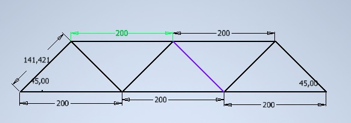
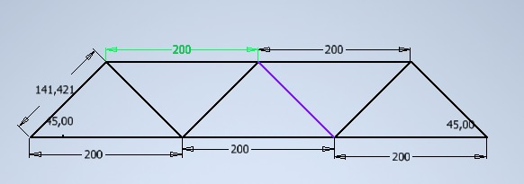
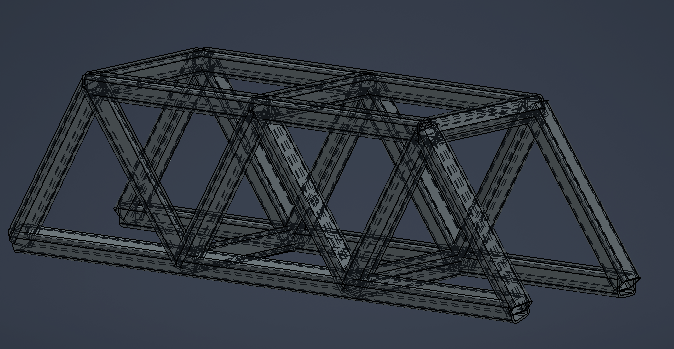

¿Qué son las resistencias de estructuras metálicas?
Las resistencias de estructuras metálicas son una serie de propiedades y características que determinan la capacidad de una estructura de acero para soportar las cargas y fuerzas a las que está expuesta. Estas resistencias son fundamentales para garantizar la seguridad y estabilidad de las construcciones metálicas.
Tipos de resistencias
Existen diferentes tipos de resistencias que se consideran al diseñar una estructura metálica:
- Resistencia a la tracción: Es la capacidad del acero para resistir fuerzas de tracción, es decir, fuerzas que tienden a estirar el material.
- Resistencia a la compresión: Es la capacidad del acero para resistir fuerzas de compresión, es decir, fuerzas que tienden a aplastar el material.
- Resistencia al corte: Es la capacidad del acero para resistir fuerzas de corte, que actúan en planos perpendiculares al eje longitudinal de la estructura.
- Resistencia a la flexión: Es la capacidad del acero para resistir fuerzas que producen flexión en la estructura, como las cargas aplicadas en los extremos de una viga, por ejemplo.
- Resistencia a la torsión: Es la capacidad del acero para resistir fuerzas que producen torsión, es decir, el giro o torsión de la estructura alrededor de su eje longitudinal.
Importancia de las resistencias en el diseño estructural
El conocimiento de las resistencias de las estructuras metálicas es esencial para los ingenieros y diseñadores estructurales. Estas resistencias son utilizadas para calcular y dimensionar los elementos de la estructura, asegurando que sean capaces de soportar las cargas previstas, cumpliendo con los requisitos de seguridad y durabilidad.

medidadas de la estructura
 

Con las medidas de la estructura procedemos a realizar una simulación por el programa inventor esto con el fin de mirar, los factores de falla de la pieza.
Calibración de la galga
Se utiliza la aplicacion de arduino para calibra las glagas a travez de un modulo Hx711 rectificar que cada uno de los pesos fuese corde a lo que no arrojaba el monitor serial de la aplicacion
Video real
En el video se observa como se realiza la prueba de deformacion de una estructura metalica, realizada por los estudiantes del curso de resistencia de materiales; esta prueba se realizo en una prensa mecanica, la cual ejerce una fuerza de comprension de uidades de medida Psi, sobre la estructura metalica, ademas de esto se observa que con una fuerza al rededor de 50 Psi se deforma la estructura
Calculos


simulación
En esta imagen observamos el diseño principal de la estructura, utilizando un hierro gris.
simulación con carga
Concluciones
1. La resistencia del material evaluado cumple con los estándares requeridos para su uso en aplicaciones
específicas. Los resultados de las pruebas de resistencia demuestran que el material posee propiedades
mecánicas adecuadas para soportar las cargas previstas.
2. Durante el proceso de evaluación, se observó que la resistencia del material disminuye a medida que
aumenta la tensión aplicada. Esto indica que el material puede experimentar deformaciones plásticas o
incluso fallas bajo cargas extremas.
3. Los ensayos realizados revelaron que la resistencia del material puede variar en función de factores
ambientales, como la temperatura y la humedad. Es fundamental considerar estos factores al seleccionar y
utilizar el material en diferentes condiciones.
4. La resistencia del material puede ser mejorada mediante técnicas de tratamiento térmico o aleación
con otros elementos. Estos procesos pueden modificar su estructura cristalina y mejorar sus propiedades
mecánicas, como la resistencia a la tracción y la dureza.
5. Es recomendable llevar a cabo pruebas periódicas de control de calidad para garantizar que el
material cumpla con las especificaciones y requisitos establecidos. Estas pruebas pueden incluir ensayos
de resistencia a la tracción, flexión u otros métodos pertinentes para evaluar la integridad del
material a lo largo del tiempo.
Reflexiones
1. La resistencia de los materiales es un factor crítico a considerar en diversas industrias, desde la
construcción hasta la ingeniería aeroespacial. Comprender cómo los materiales se comportan bajo
diferentes condiciones de carga es esencial para garantizar la seguridad y el rendimiento de las
estructuras y componentes.
2. La resistencia de un material no solo depende de su composición química, sino también de su
procesamiento y fabricación. La calidad del material y su capacidad para resistir tensiones externas
pueden variar según los métodos de producción y las prácticas de fabricación utilizadas.
3. Es esencial tener en cuenta el factor de seguridad al diseñar estructuras o componentes que utilizan
materiales con una resistencia conocida. Establecer márgenes de seguridad adecuados garantiza que las
estructuras puedan soportar cargas inesperadas o fluctuaciones en las condiciones de servicio.
4. El análisis de la resistencia de los materiales puede proporcionar información valiosa para la toma
de decisiones en términos de selección de materiales y diseño de productos. Al comprender las
limitaciones y características del material, es posible optimizar su rendimiento y reducir los riesgos
asociados con su uso.
5. La resistencia de los materiales puede influir en su vida útil y en el costo total de propiedad.
Evaluar la durabilidad y resistencia de un material a largo plazo puede ayudar a prevenir fallas
prematuras y a minimizar los costos de mantenimiento y reemplazo en el futuro.
Referencias
Manual del Eurocódigo 3: Diseño de estructuras de acero. Comité Europeo de Normalización (CEN). Disponible en: https://www.cenor.pt/pt/catalogo/norma/4461/ Design of Steel Structures - Eurocode 3: Design of Steel Structures - Part 1-1: General Rules and Rules for Buildings. European Committee for Standardization (CEN).